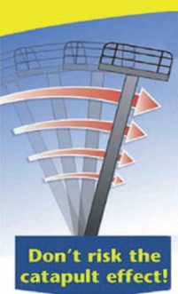
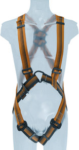
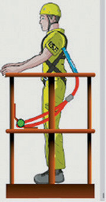
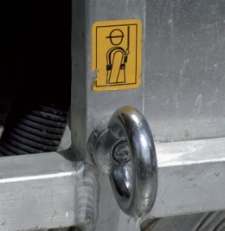
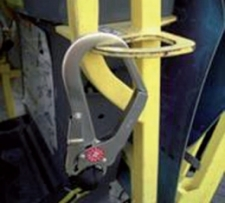
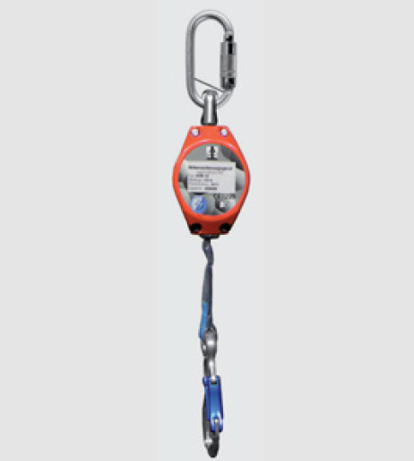

Diese Auswahl hängt weitestgehend vom Einsatzort und von der Art der Tätigkeit ab.
Auch beim Umgang mit fahrbaren Hubarbeitsbühnen können verschiedene Schutzausrüstungen zum Einsatz kommen, z. B.
Das Tragen einer persönlichen Schutzausrüstung (PSA) gegen Absturz in Hubarbeitsbühnen wird verpflichtend, wenn die Gefährdungsbeurteilung (Peitscheneffekt) und/oder die Betriebsanleitung des Hubarbeits bühnenherstellers dies als notwendige Maßnahme vorgibt oder der Bauherr auf seiner Baustelle die Benutzung der PSA gegen Absturz in einer Baustellenordnung festlegt.

Bild 9-1: Peitscheneffekt/Katapulteffekt
Der Peitscheneff ekt/Katapulteff ekt (Bild 9-1) kann insbesondere beim Einsatz von Teleskoparbeitsbühnen auft reten, wenn z. B.
Besteht die Notwendigkeit der Benutzung einer PSA gegen Absturz beim Bedienen der Hub arbeitsbühne, sind ein Auff anggurt (Bild 9-2) sowie ein geeignetes Verbindungsmittel vom Unternehmer zur Verfügung zu stellen und von den Personen im Arbeitskorb zu benutzen (Bild 9-3).

Bild 9-2: Ganzkörpergurt mit Beinschlaufen

Bild 9-3: Einsatz von PSA gegen Absturz beim Verfahren
Folgende Bedingungen sind einzuhalten, um ein Herausschleudern aus dem Arbeitskorb zu vermeiden:


Bild 9-4: Anschlagpunkte (Haltepunkte)

Bild 9-5: Höhensicherungsgerät Typ ACB 1.8 (Fa. IKAR GmbH)
| Das Befestigen der PSA gegen Absturz an den vor gesehenen Anschlagpunkten berechtigt nicht zum Aussteigen aus dem Arbeitskorb in angehobener Position der Bühne oder dem Aufsteigen auf das Geländer des Arbeitskorbes. |
Auf Senkrechtlift en, z. B. Scherenbühnen, ist PSA gegen Absturz in der Regel nicht erforderlich, es sei denn, dass besondere Einsatzbedingungen (siehe Ergebnis der Gefährdungsbeurteilung) oder Angaben des Herstellers (siehe Betriebsanleitung) dies erfordern.
Unterweisungen und Übungen zur sachgerechten Anwendung von PSA gegen Absturz gehören zu den Pflichten des Unternehmers bzw. der Führungskräfte.
PSA gegen Absturz ist regelmäßig, mind es tens einmal jährlich, von einem Sach kundigen hinsichtlich möglicher Beschädigungen zu überprüfen. Darüber hinaus hat der Hubarbeitsbühnenbediener seinen Auff anggurt sowie das verwendete Verbindungsmittel vor der Benutzung arbeits täg lich auf Mängel und Beschädigungen zu prüfen.
Weitergehende Hinweise und Regelungen, einschließlich der richtigen Anwendung der PSA gegen Absturz sowie der möglichen Rettung, fi nden Sie in der BG-Information ˶Schutz gegen Absturz – Persönliche Absturzschutzausrüstung sachkundig auswählen, anwenden und prüfen˝ (BGI 826).